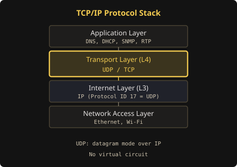
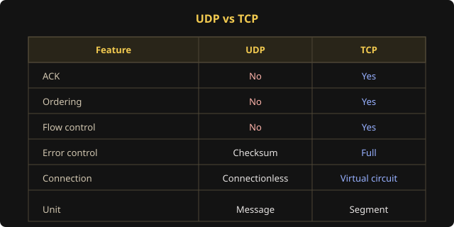
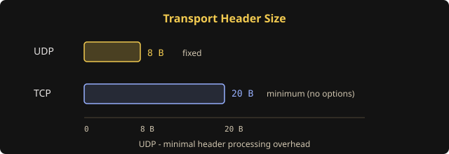
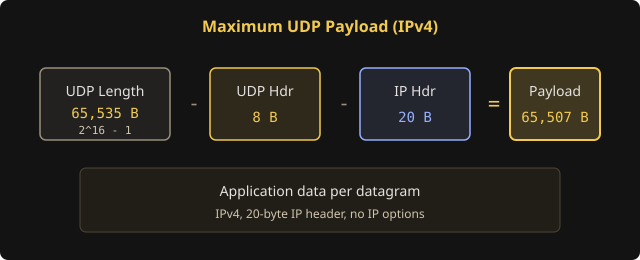
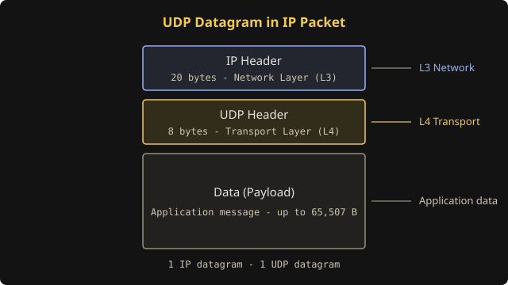
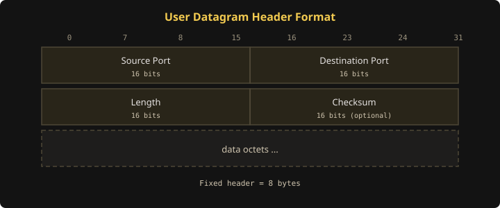
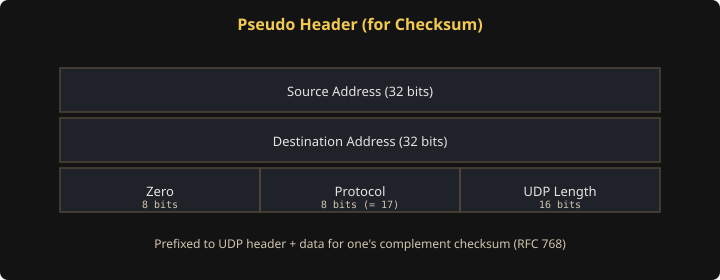

// OSI · Transport Layer
UDP
User Datagram Protocol — OSI 4계층 전송 계층의 비연결형 프로토콜
01. UDP (User Datagram Protocol)
TCP/IP 프로토콜 群 중 트랜스포트(전송) 계층의 통신 프로토콜 하나로, TCP에 대비되는 비연결형 프로토콜입니다.
- 신뢰성이 낮은 프로토콜로, 완전성을 보증하지 않습니다.
- 가상 회선을 굳이 확립할 필요가 없고, 유연하며 실시간 응용의 데이터 전송에 적합합니다.

02. UDP 주요 기능 및 특징
비연결·비신뢰·비순서 Datagram 서비스
UDP는 비연결성이고, 신뢰성이 없으며, 순서화되지 않은 Datagram 서비스를 제공합니다.

- 확인응답 없음 — 메시지가 제대로 도착했는지 확인하지 않습니다.
- 순서제어 없음 — 수신된 메시지의 순서를 맞추지 않습니다. TCP 헤더와 달리 순서번호 필드가 없습니다.
- 흐름제어 없음 — 흐름 제어를 위한 피드백을 제공하지 않습니다.
- 오류제어 거의 없음 — 검사합(Checksum)을 제외한 특별한 오류 검출·제어가 없습니다. UDP를 사용하는 프로그램 쪽에서 오류제어 기능을 스스로 갖추어야 합니다.
- 비연결성 — 논리적인 가상회선 연결이 필요 없습니다 (No Handshaking). 데이터그램 지향의 전송계층용 프로토콜입니다.
실시간 응용 및 멀티캐스팅
- 실시간용 — 빠른 요청과 응답이 필요한 실시간 응용에 적합합니다. (예: RTP)
- 1:多 — 여러 지점에 동시 전송이 가능합니다 (Multicasting).
- 무제한 — 전송 속도 제한이 없습니다.
단순한 헤더
헤더는 고정 크기 8바이트만 사용합니다 (TCP는 최소 20바이트). 헤더 처리에 많은 시간과 노력을 요하지 않습니다.

UDP 위에서 동작하는 프로토콜·응용
TFTP, SNMP, DHCP, NFS, DNS, RIP, NTP, RTP 등이 UDP 위에서 동작합니다.
데이터 전송 단위
UDP의 데이터 전송 단위는 메시지(Message)입니다. 한편 TCP의 데이터 전송 단위는 TCP 세그먼트(Segment)라고 합니다.
최대 데이터 크기
이론상 UDP Length 필드 최대값은 65,535바이트이나, IP 수용 제한에 따라 실질적인 최대 페이로드는 다음과 같습니다.

03. UDP 포맷 구조
기본적으로, 하나의 IP 패킷에 하나의 UDP만 수용됩니다.
UDP 패킷 구조

UDP 헤더 구조
TCP 헤더에 비해 매우 단순합니다.

- 발신/수신 포트 번호 — TCP처럼 16비트 포트 번호를 사용합니다.
-
길이 (Length) — 바이트 단위의 길이입니다.
- 최소값 8 (헤더만 포함), 최대값 216 − 1 = 65,535
- UDP 헤더 8바이트를 포함한 패킷 전체 길이를 바이트 단위로 표시합니다.
- IP 수용 제한에 따라 실질 최대: 65,507 바이트 (65,535 − 8 − 20)
-
체크섬 (Checksum) — 선택 항목입니다. 성능을 위해 에러 검출 기능도 생략 가능합니다.
- 체크섬 값이 0이면 수신측은 체크섬 계산을 하지 않습니다.
- 계산 시 IP 의사 헤더(Pseudo Header)를 함께 사용합니다. (RFC 768 체크섬 참조)
04. 관련 표준 및 프로토콜 ID
- 표준 — RFC 768, RFC 1122
- 프로토콜 ID — 17 (IP 헤더 Protocol 필드)
05. RFC 768
원문: RFC 768 — User Datagram Protocol (Postel, 1980)
Introduction
This User Datagram Protocol (UDP) is defined to make available a datagram mode of packet-switched computer communication in the environment of an interconnected set of computer networks. This protocol assumes that the Internet Protocol (IP) is used as the underlying protocol.
This protocol provides a procedure for application programs to send messages to other programs with a minimum of protocol mechanism. The protocol is transaction oriented, and delivery and duplicate protection are not guaranteed. Applications requiring ordered reliable delivery of streams of data should use the Transmission Control Protocol (TCP).
Format — User Datagram Header
Fields
- Source Port — 선택 필드. 송신 프로세스의 포트를 나타내며, 다른 정보가 없을 때 회신 주소로 가정됩니다. 사용하지 않으면 0을 넣습니다.
- Destination Port — 특정 인터넷 목적지 주소 맥락에서 의미를 갖습니다.
- Length — 이 UDP 데이터그램 전체 길이(헤더 + 데이터)를 옥텟 단위로 표시합니다. 최소값은 8입니다.
- Checksum — IP 헤더 정보, UDP 헤더, 데이터로 구성된 의사 헤더(Pseudo Header)와 함께 16비트 1의 보수 합을 계산합니다. 잘못 라우팅된 데이터그램에 대한 보호를 제공하며, TCP와 동일한 체크섬 절차를 사용합니다.
Pseudo Header (체크섬 계산용)

계산된 체크섬이 0이면 전송 시 모두 1로 보냅니다 (1의 보수 산술에서 0과 동치). 전송된 체크섬이 모두 0이면 송신자가 체크섬을 생성하지 않았음을 의미합니다 (디버깅 또는 상위 프로토콜이 무시하는 경우).
User Interface
사용자 인터페이스는 다음을 제공해야 합니다.
- 새 수신 포트 생성
- 수신 포트에서 데이터 옥텟과 송신 포트·주소를 반환하는 수신 연산
- 데이터, 송·수신 포트와 주소를 지정하여 데이터그램을 보내는 송신 연산
IP Interface & 주요 용도
UDP 모듈은 IP 헤더로부터 송·수신 인터넷 주소와 프로토콜 필드를 알아내야 합니다. 이 프로토콜의 주요 용도는 Internet Name Server와 Trivial File Transfer입니다.